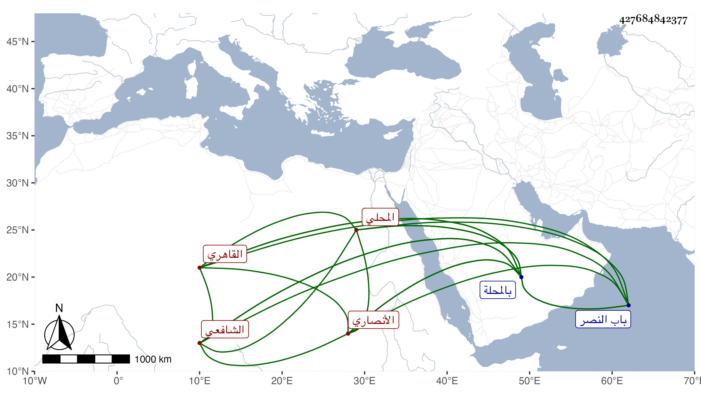

0902Sakhawi.DawLamic.ITO20230111-ara1.EIS1600.427684842377
Biography ID: 427684842377
860
محمد بن إبراهيم بن أحمد بن هاشم الكمال أو الشمس بن البرهان بن الشهاب أبي العباس الأنصاري المحلي ثم القاهري الشافعي جد الجلال المحلي الآتي . ولد سنة ثلاثين وسبعمائة بالمحلة وقدم منها وهو شاب في الطاعون سنة تسع وأربعين فنزل بخلوة في الخانقاه البيبرسية مجاورة للمزملة عند الباب على يمين الداخل لصحن المدرسة ودامت معه ثم مع بنيه مائة وعشرين سنة وعرض بعض محفوظاته من التنبيه وألفية النحو على العز عبد العزيز بن جماعة فأكرمه وكذا عرضهما في سنة تسع وخمسين على الجمال الأسنوي وأخيه العماد محمد والبلقيني وابن الملقن وأجازوه والبدر حسن بن العلاء القونوي والبهاء أحمد بن التقي السبكي والجمال عبد الله بن يوسف بن هشام وكتبوا له ولم يصرحوا بالإجازة وقبل ذلك بيسير سنة سبع وخمسين بالمحلة عرض جميع الشاطبية على أحد شيوخ القراء محمد بن عمر بن محمد بن موسى بن موسى الحكري الشهير بابن البزار تلميذ البرهانين الحكري والرشيدي وأذن له في روايتها وفي القراءة والإقراء بها ووصفوا والده بالإجلال ولقبوه هو شمس الدين واشتغل وأخذ عن الكمال النشائي شرحه على جامع المختصرات وكتبه بخطه وعن الشهاب السمين وابن عقيل وابن النقيب والأسنوي وأبي البقاء السبكي والكلائي الفرضي والقرمي وغيرهم ، وبرع وتفنن وكتب بخطه أشياء وخطه جيد لكن غلب عله الورع والانعزال فلم يشتهر وممن أخذ عنه حفيده ، وعمر دهرا حتى مات بمسجد منسوب للأشراف كان منقطعا فيه للعبادة برأس الجوانية ودفن بحوش تجاه تربة جوشن خارج باب النصر رحمه الله .
